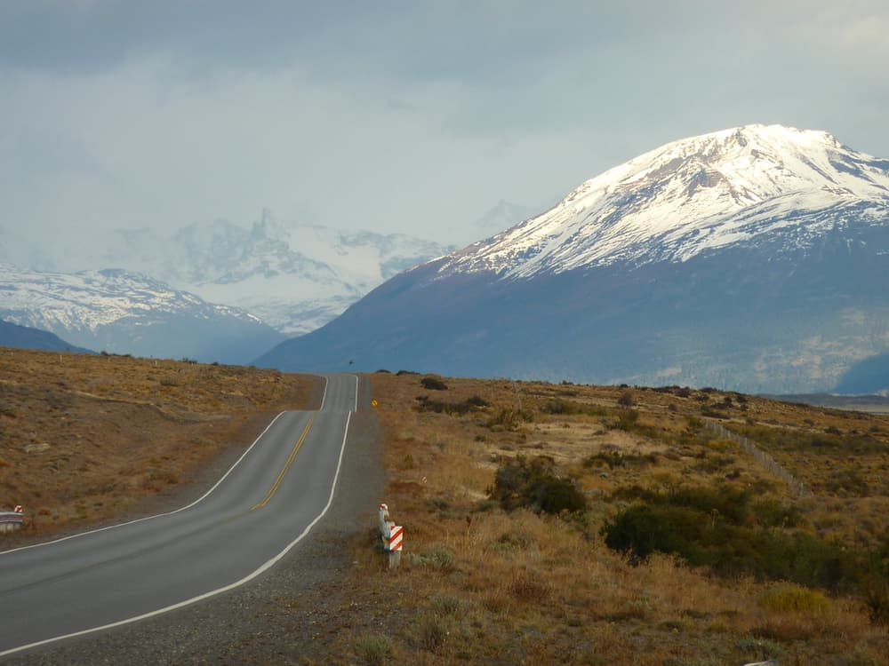
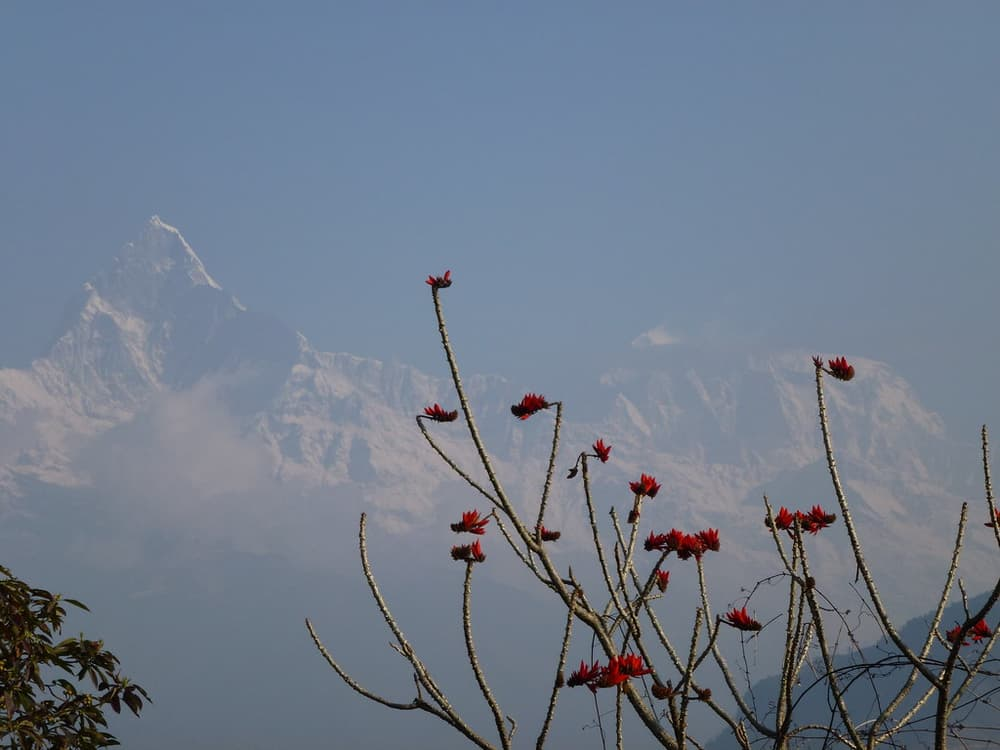
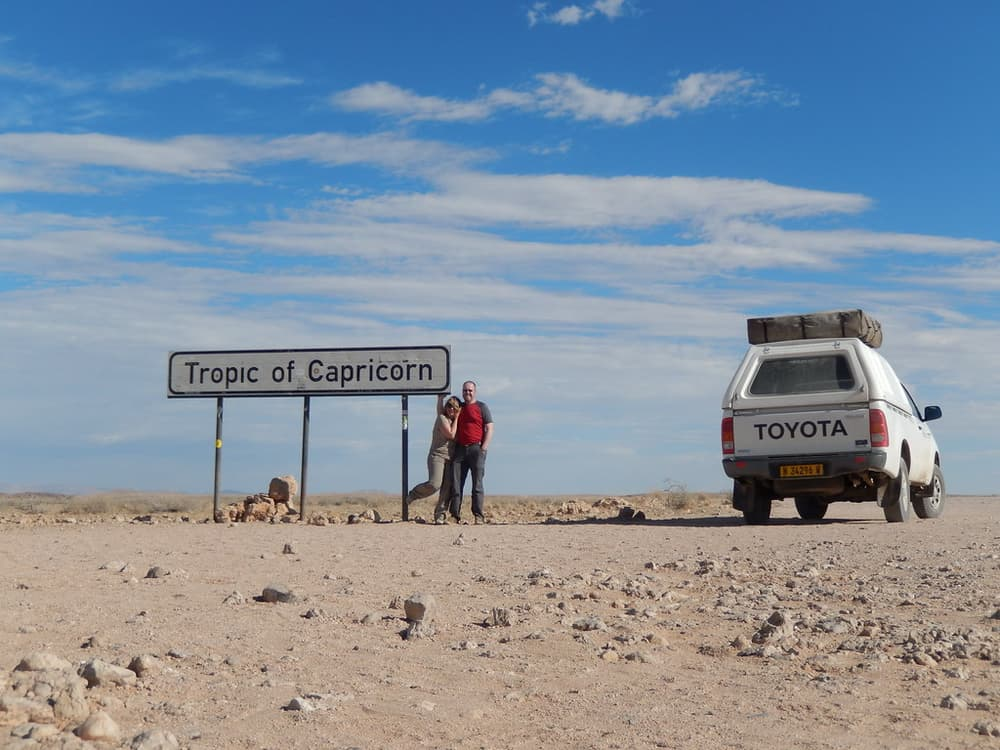
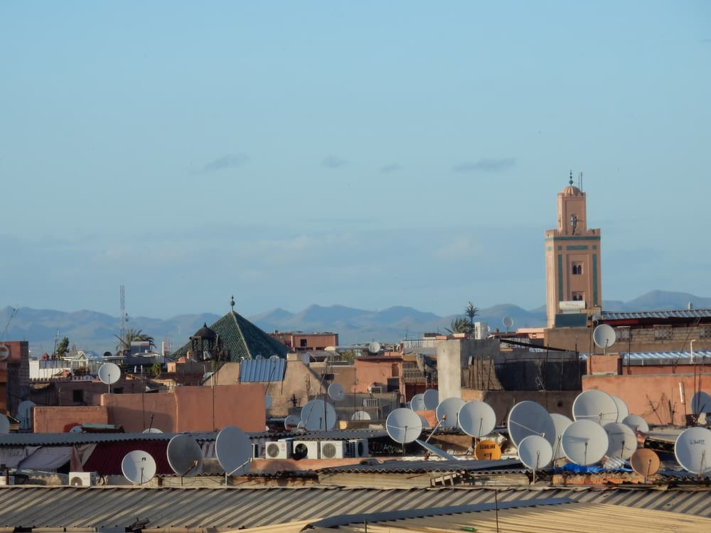
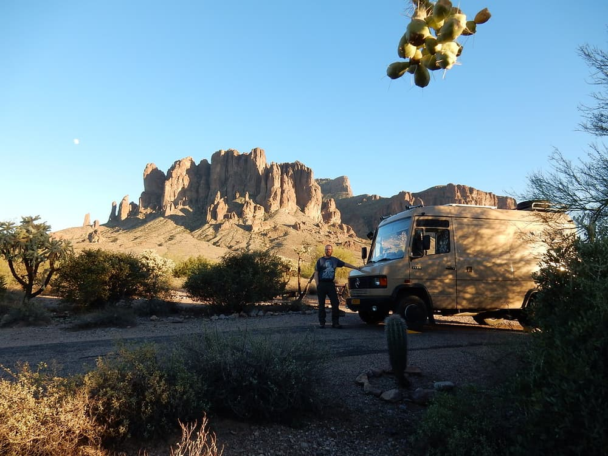

Van fjord tot woestijn
Met de camper door Europa en rondreizen door Amerika, Azië, Afrika en Oceanië. Een greep uit de reizen.





Zo krijg je toegang
De reisverhalen zijn alleen te lezen met toegang. Die vraag je één keer aan; daarna log je in met je e-mailadres.
Vraag toegang aan
Vul je naam en e-mailadres in op de aanvraagpagina.
Wacht op goedkeuring
Je krijgt een mail zodra je aanvraag is goedgekeurd.
Log in met een code
Klik op "Naar de reizen", vul je e-mailadres in en gebruik de code die je per mail krijgt.
Klaar om mee te reizen?
Al toegang? Dan ga je direct naar de reizen. Anders vraag je het hier aan.